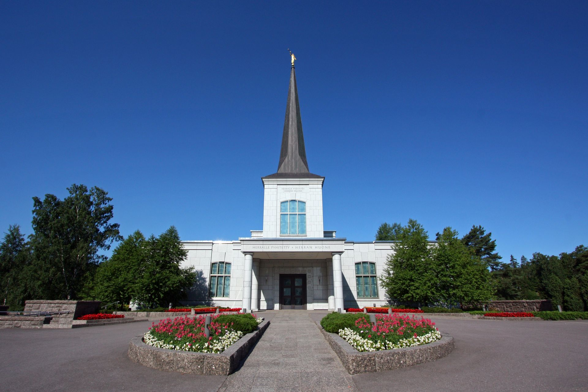

Helsinki Finland Temple
The Helsink Finland Temple was dedicated by President Gordon B. Hinckley on October 22nd, 2006 and was the last temple dedicated by President Hinckley before his passing away on January 27th, 2008.